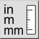
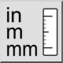
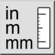
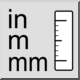

Zeichnungseinheit konvertieren
Werkzeugleiste / Symbol:
 

Menü: Bearbeiten > Zeichnungseinheit konvertieren
Tastenkürzel: C, U
Kommandos: convertunit | cu
Werkzeugleiste / Symbol:
 

Menü: Bearbeiten > Zeichnungseinheit konvertieren
Tastenkürzel: C, U
Kommandos: convertunit | cu